During our community engagement in Akopari, Asa LGA, Kwara State, we encountered a reality no child should have to grow up with. The community has a borehole, but it no longer works. Families now depend on river water, adding alum in an attempt to make it safe for drinking. Residents recounted a distressing experience in which a guest developed stomach problems after drinking water prepared this way. They spoke about the embarrassment and helplessness they feel when visitors come to their community.
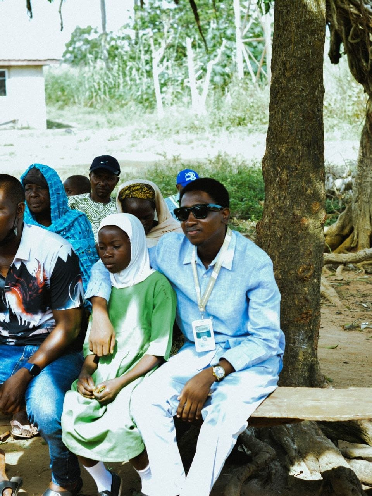
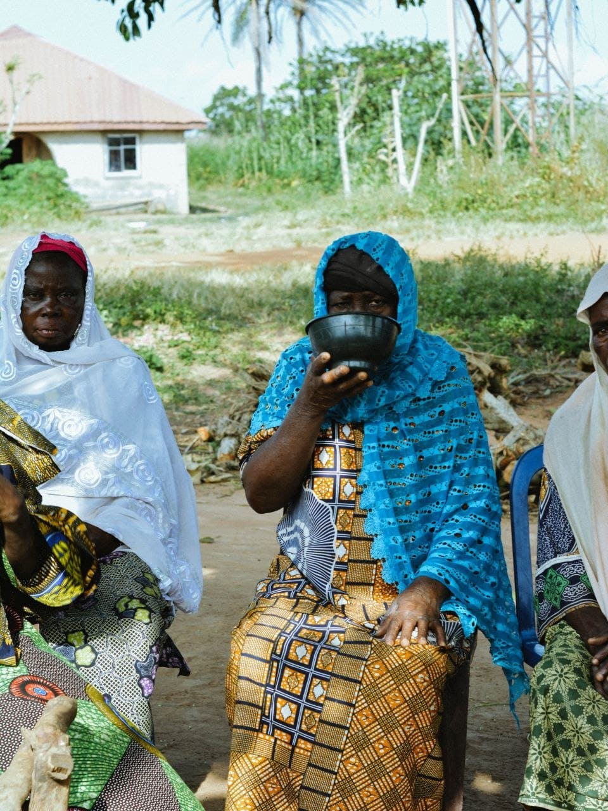
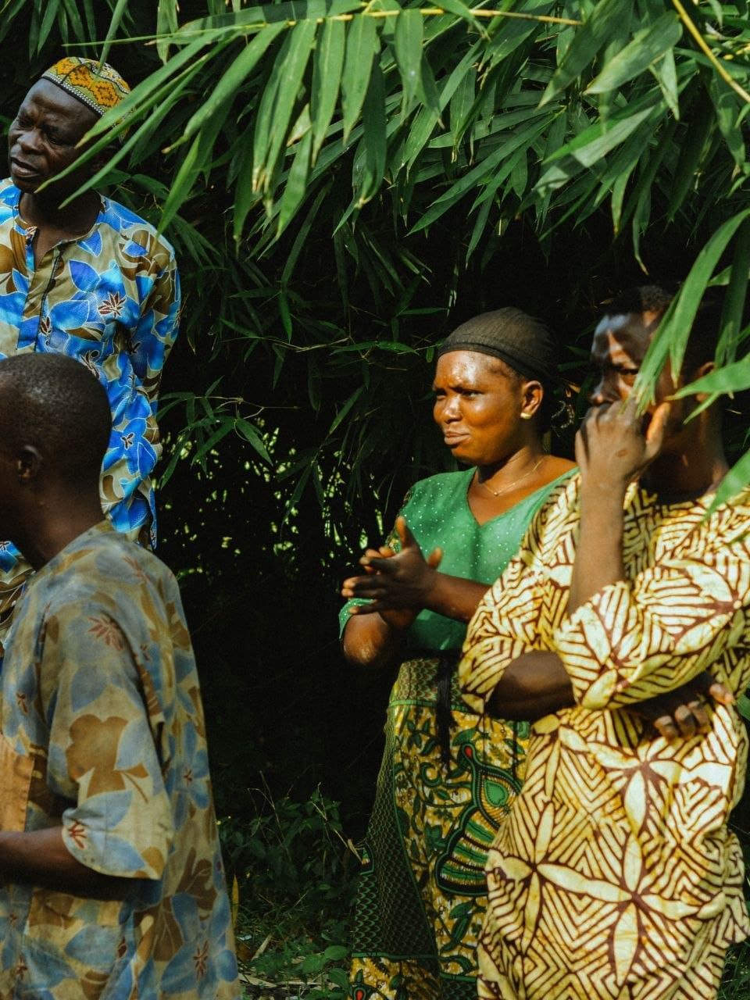
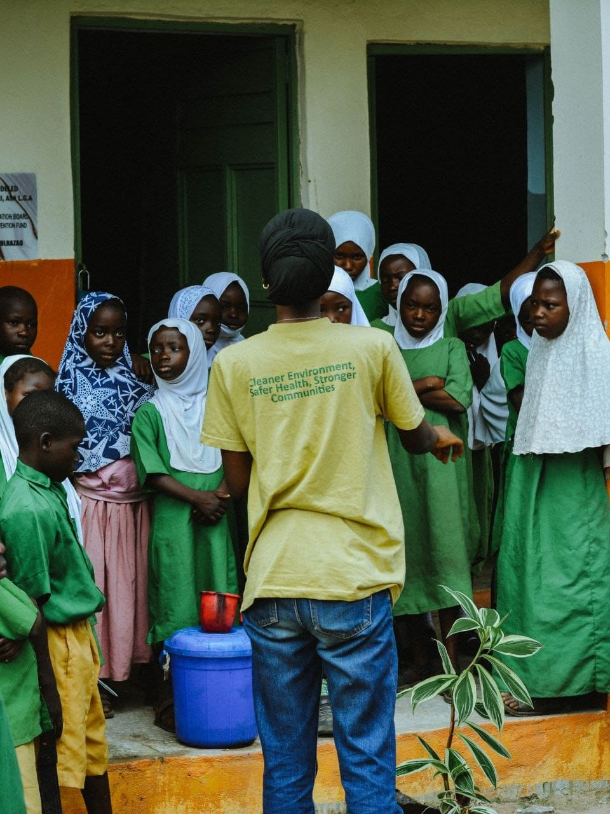
At the local school, teachers shared another concern. They have toilets, but without water, maintaining proper sanitation becomes difficult. They also lack the textbooks needed to support their pupils' learning. Then came another painful revelation: when someone falls ill, getting medical attention means travelling outside the village to Eyenkorin. Think about that for a moment. A child may drink unsafe water, fall ill, struggle with inadequate sanitation at school, and still have no nearby healthcare facility to turn to.
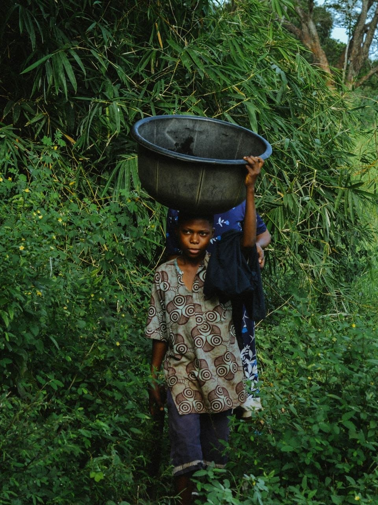
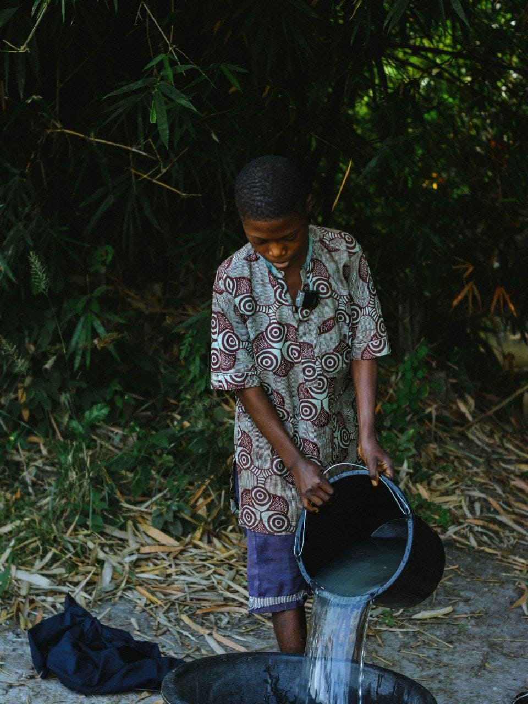
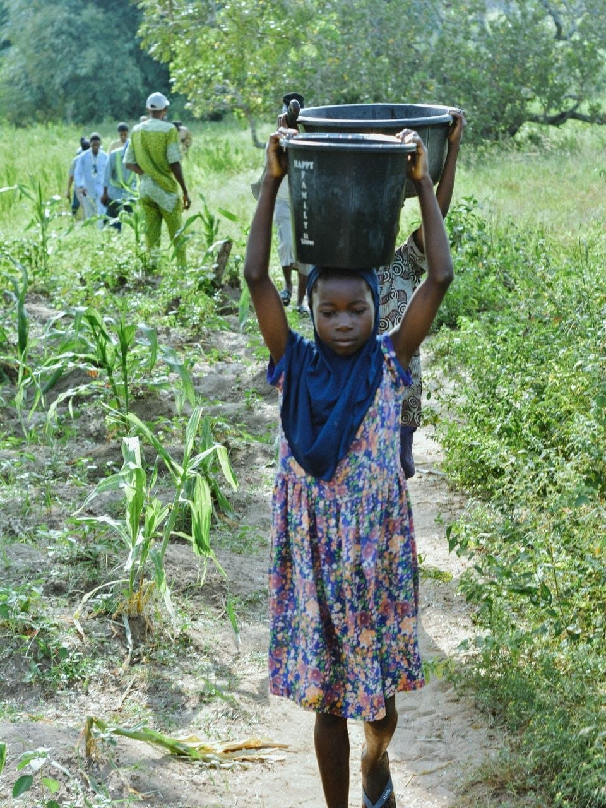
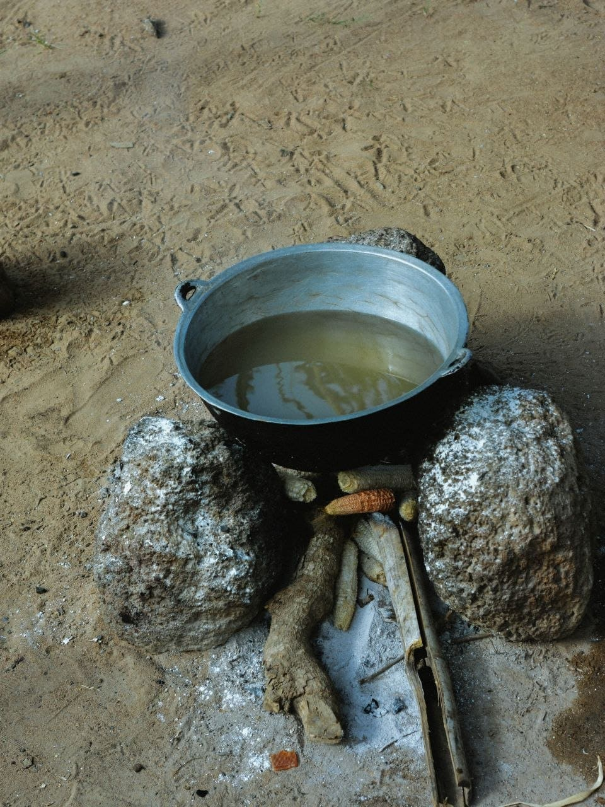
These are not isolated inconveniences. Together, they raise serious questions about children's health, safety, dignity and development. Through Environmental Health of a Child, Grace Life Foundation For Social Impacts is seeking to understand the everyday realities shaping children's lives, because protecting a child must go beyond what happens inside the classroom. It must include the water they drink, the sanitation they access, the healthcare available to them and the environment in which they grow.
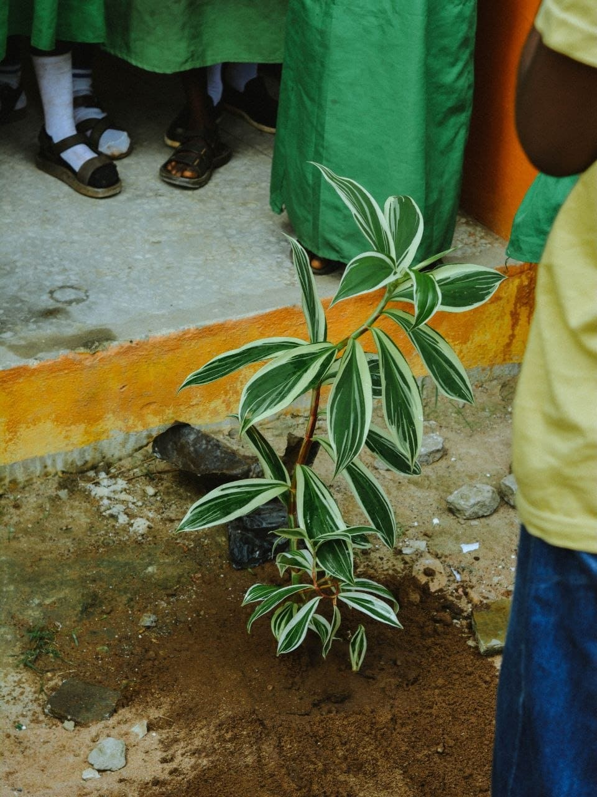
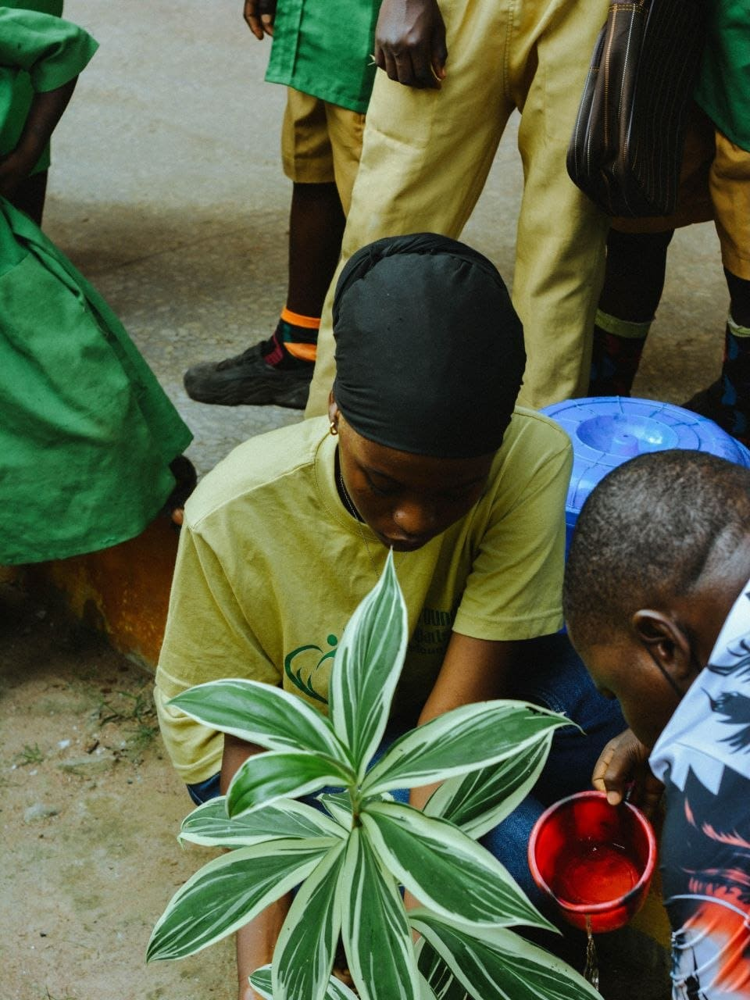
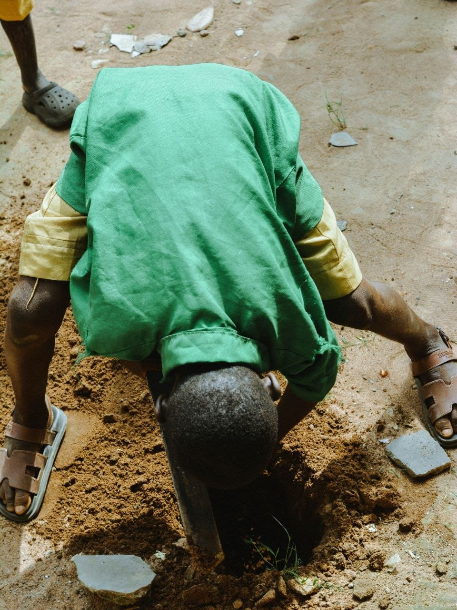
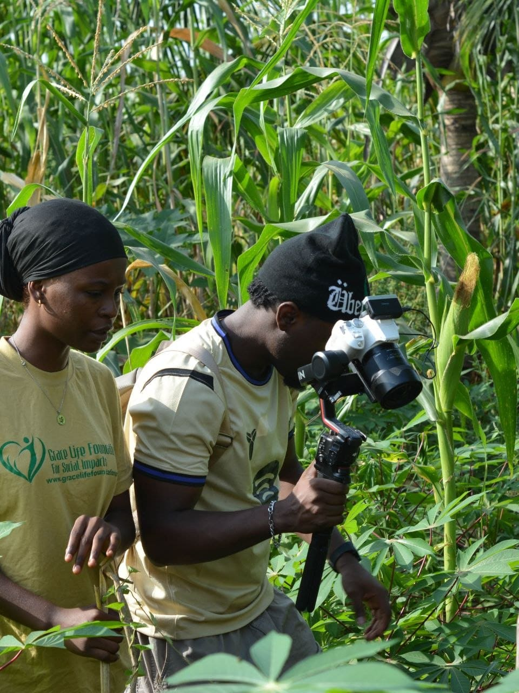